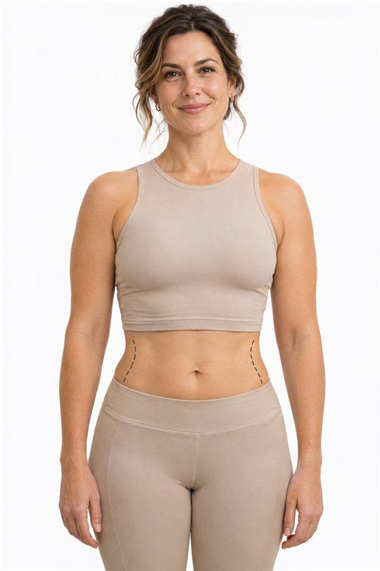
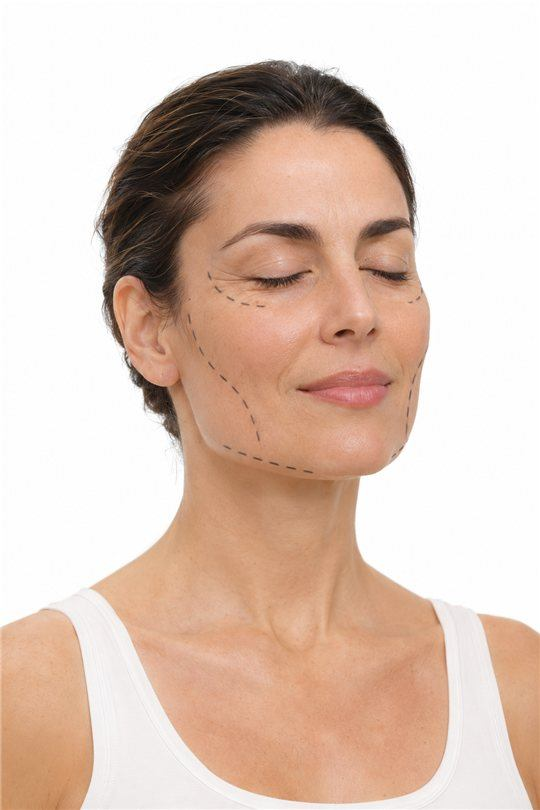
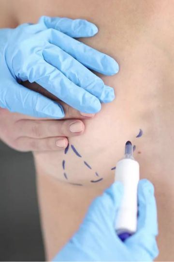
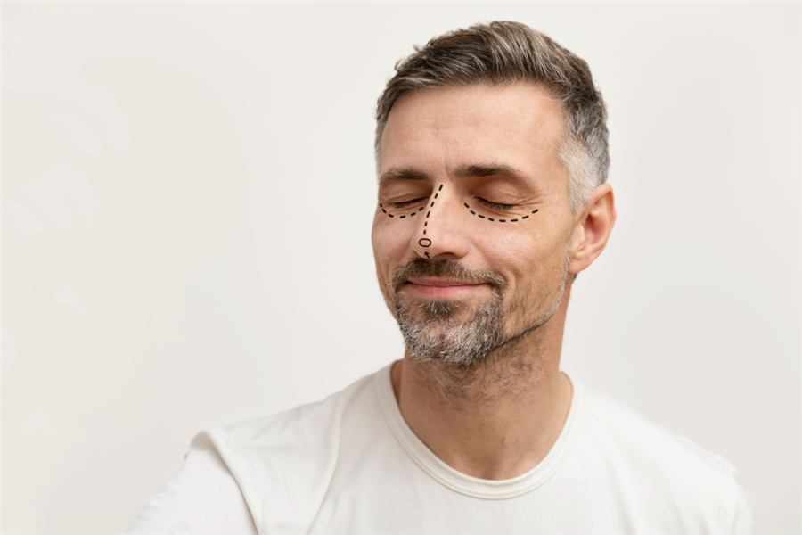
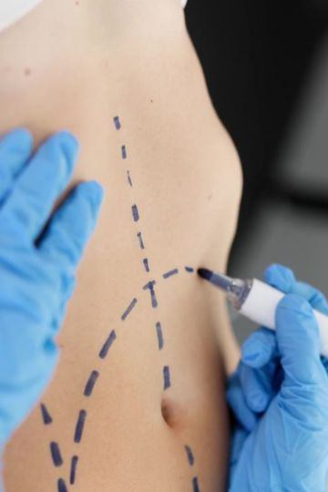
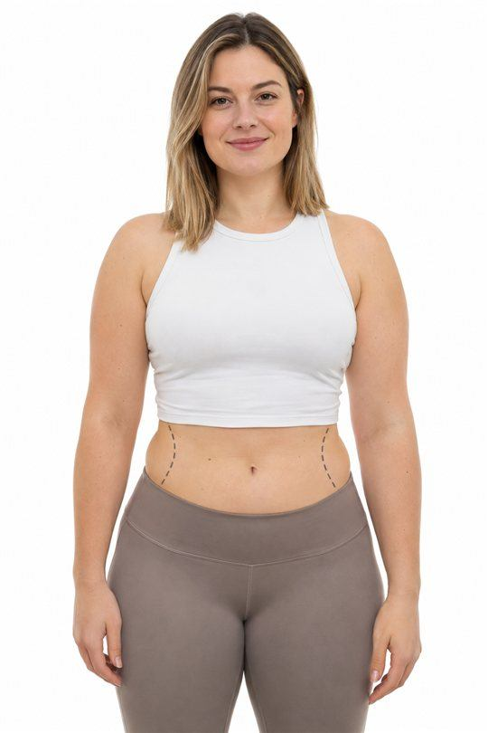

Rinoplastia
Explora una nueva armonía para tu nariz y tu rostro.

UN CAMINO PENSADO PARA TI

Un espacio para ti y para los cambios de tu cuerpo después de la maternidad. Exploremos juntos tus opciones.
Consultar por WhatsApp
Dale un nuevo momento de cuidado a tu piel. Conoce estas opciones y descubre cuál se adapta a lo que buscas.
Consultar por WhatsApp
Explora el volumen y las proporciones que van contigo, con una atención que escucha tus preferencias.
Consultar por WhatsApp
Hablemos de la armonía de tu nariz y de tu respiración, con un enfoque pensado para tus necesidades.
Consultar por WhatsApp
Descubre opciones para definir tu silueta y realzar tus proporciones de una forma personal.
Consultar por WhatsApp
Da el primer paso hacia tus objetivos de bienestar. Conoce las opciones y el acompañamiento adecuado para ti.
Consultar por WhatsAppExplora una nueva armonía para tu nariz y tu rostro.
Conoce una opción que considera tu nariz y tu respiración.
Dale a tu mirada una apariencia más fresca y descansada.
Descubre opciones para renovar la apariencia de tu mirada.
Redescubre los contornos de tu rostro con un enfoque personal.
Explora un contorno de cuello más definido y armonioso.
Busca un equilibrio entre tus orejas y las facciones de tu rostro.
Conoce opciones para dar mayor definición a tus mejillas.
Explora cómo el mentón puede aportar equilibrio a tu perfil.
Descubre opciones para definir el contorno bajo tu mentón.
Explora una apariencia con más volumen y frescura.
Explora una nueva armonía entre tus labios y tu sonrisa.
Dale protagonismo a una mirada más abierta y expresiva.
Conoce alternativas para renovar la apariencia de tu cuello.
Explora el volumen que mejor acompañe tus proporciones.
Busca mayor comodidad y equilibrio para tu busto.
Descubre opciones para realzar la forma de tu busto.
Explora una combinación de volumen y realce para tu busto.
Revisa tus opciones para una nueva etapa de tu cuidado.
Conoce alternativas que acompañen tus preferencias actuales.
Busca una mayor armonía entre las proporciones de tu busto.
Explora un proceso de reconstrucción pensado para ti.
Conoce opciones para un contorno de pecho más definido.
Da el primer paso para valorar el cuidado de tu pecho.
Explora un contorno de pecho acorde con tu identidad.
Explora opciones para definir las zonas que deseas atender.
Conoce un enfoque que busca destacar los contornos de tu cuerpo.
Descubre una visión integral del contorno de tu cintura.
Explora una silueta en armonía con tus proporciones.
Conoce opciones para realzar la forma de tus glúteos.
Descubre alternativas para redefinir el contorno de tu abdomen.
Explora una atención enfocada en la parte baja de tu abdomen.
Un enfoque personal para los cambios de tu cuerpo tras la maternidad.
Conoce opciones para renovar el contorno de tus brazos.
Explora una mayor definición en el contorno de tus muslos.
Descubre una atención integral para los cambios de tu silueta.
Conoce opciones para atender el exceso de piel y buscar mayor comodidad.
Explora una apariencia más relajada, conservando tu expresión.
Descubre opciones para realzar los detalles de tu rostro.
Encuentra un enfoque que considere el equilibrio de tus facciones.
Conoce alternativas para acompañar el cuidado de tu piel.
Explora opciones para una apariencia más fresca y vital.
Conoce una alternativa para aportar volumen a tu rostro.
Dale a tu piel un espacio de atención y cuidado personal.
Descubre una opción para renovar la apariencia de tu piel.
Explora alternativas para la apariencia y textura de tu piel.
Conoce opciones de reconstrucción que acompañen tu proceso personal.
Explora alternativas para reconstruir la forma de la oreja.
Conoce un enfoque que considera la forma y función de tu nariz.
Descubre una atención centrada en tu rostro y tus necesidades.
Explora alternativas para recuperar zonas que necesitan atención.
Conoce opciones para suavizar la apariencia de tus cicatrices.
Da el siguiente paso en el cuidado de las zonas afectadas.
Encuentra orientación para diferencias presentes desde el nacimiento.
Conoce opciones de atención para cada etapa de este proceso.
Explora opciones para tu comodidad íntima en un espacio de confianza.
Conoce alternativas de cuidado íntimo según tus necesidades.
Descubre opciones para armonizar el contorno de tu zona íntima.
Explora alternativas para el contorno y la comodidad del monte de Venus.
Busca mayor equilibrio con una atención cercana y discreta.
Conversa sobre opciones de cuidado para esta etapa de tu vida.
Conoce las opciones disponibles en una consulta privada y personal.
Explora tus preferencias de apariencia y comodidad con discreción.
Explora una atención que reúne armonía nasal y respiración.
Conversa sobre el volumen y las proporciones que buscas.
Descubre un enfoque conjunto para la cintura y el contorno glúteo.
Explora una combinación de opciones pensada en tu etapa de vida.
Resuelve tus dudas y conoce tus opciones en un espacio privado.
Conoce alternativas para dar una apariencia renovada a tu mirada.
Prueba con otro nombre o explora todas las categorías.